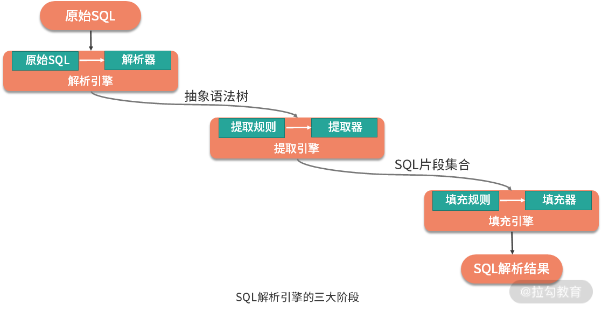
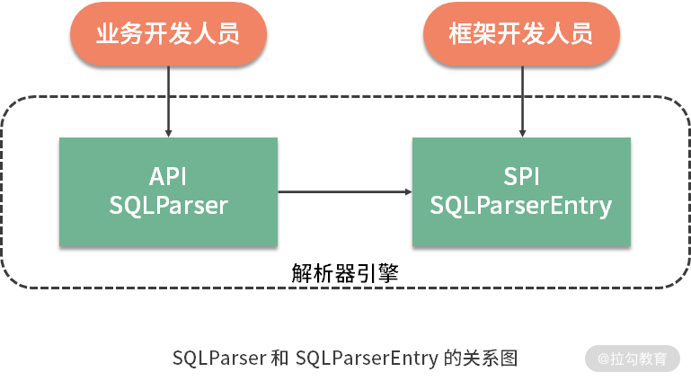

- 00 如何正确学习一款分库分表开源框架？.md
- 01 从理论到实践：如何让分库分表真正落地？.md
- 02 顶级项目：ShardingSphere 是一款什么样的 Apache 开源软件？.md
- 03 规范兼容：JDBC 规范与 ShardingSphere 是什么关系？.md
- 04 应用集成：在业务系统中使用 ShardingSphere 的方式有哪些？.md
- 05 配置驱动：ShardingSphere 中的配置体系是如何设计的？.md
- 06 数据分片：如何实现分库、分表、分库+分表以及强制路由？（上）.md
- 07 数据分片：如何实现分库、分表、分库+分表以及强制路由？（下）.md
- 08 读写分离：如何集成分库分表+数据库主从架构？.md
- 09 分布式事务：如何使用强一致性事务与柔性事务？.md
- 10 数据脱敏：如何确保敏感数据的安全访问？.md
- 11 编排治理：如何实现分布式环境下的动态配置管理？.md
- 12 从应用到原理：如何高效阅读 ShardingSphere 源码？.md
- 13 微内核架构：ShardingSphere 如何实现系统的扩展性？.md
- 14 分布式主键：ShardingSphere 中有哪些分布式主键实现方式？.md
- 15 解析引擎：SQL 解析流程应该包括哪些核心阶段？（上）.md
- 16 解析引擎：SQL 解析流程应该包括哪些核心阶段？（下）.md
- 17 路由引擎：如何理解分片路由核心类 ShardingRouter 的运作机制？.md
- 18 路由引擎：如何实现数据访问的分片路由和广播路由？.md
- 19 路由引擎：如何在路由过程中集成多种路由策略和路由算法？.md
- 20 改写引擎：如何理解装饰器模式下的 SQL 改写实现机制？.md
- 21 执行引擎：分片环境下 SQL 执行的整体流程应该如何进行抽象？.md
- 22 执行引擎：如何把握 ShardingSphere 中的 Executor 执行模型？（上）.md
- 23 执行引擎：如何把握 ShardingSphere 中的 Executor 执行模型？（下）.md
- 24 归并引擎：如何理解数据归并的类型以及简单归并策略的实现过程？.md
- 25 归并引擎：如何理解流式归并和内存归并在复杂归并场景下的应用方式？.md
- 26 读写分离：普通主从架构和分片主从架构分别是如何实现的？.md
- 27 分布式事务：如何理解 ShardingSphere 中对分布式事务的抽象过程？.md
- 28 分布式事务：ShardingSphere 中如何集成强一致性事务和柔性事务支持？（上）.md
- 29 分布式事务：ShardingSphere 中如何集成强一致性事务和柔性事务支持？（下）.md
- 30 数据脱敏：如何基于改写引擎实现低侵入性数据脱敏方案？.md
- 31 配置中心：如何基于配置中心实现配置信息的动态化管理？.md
- 32 注册中心：如何基于注册中心实现数据库访问熔断机制？.md
- 33 链路跟踪：如何基于 Hook 机制以及 OpenTracing 协议实现数据访问链路跟踪？.md
- 34 系统集成：如何完成 ShardingSphere 内核与 Spring+SpringBoot 的无缝整合？.md
- 35 结语：ShardingSphere 总结及展望.md
15 解析引擎：SQL 解析流程应该包括哪些核心阶段？（上）
你好，欢迎进入第 15 课时的学习，结束了对 ShardingSphere 中微内核架构等基础设施相关实现机制的介绍后，今天我们将正式进入到分片引擎的学习。
对于一款分库分表中间件而言，分片是其最核心的功能。下图展示了整个 ShardingSphere 分片引擎的组成结构，我们已经在[《12 | 从应用到原理：如何高效阅读 ShardingSphere 源码》]这个课时中对分片引擎中所包含的各个组件进行了简单介绍。我们知道，对于分片引擎而言，第一个核心组件就是 SQL 解析引擎。

对于多数开发人员而言，SQL 解析是一个陌生的话题，但对于一个分库分表中间件来说却是一个基础组件，目前主流的分库分表中间件都包含了对解析组件的实现策略。可以说，SQL 解析引擎所生成的结果贯穿整个 ShardingSphere。如果我们无法很好地把握 SQL 的解析过程，在阅读 ShardingSphere 源码时就会遇到一些障碍。
另一方面，SQL 的解析过程本身也很复杂，你在拿到 ShardingSphere 框架的源代码时，可能首先会问这样一个问题：SQL 的解析过程应该包含哪些核心阶段呢？接下来我将带你深度剖析这个话题。
从 DataSource 到 SQL 解析引擎入口
在对分片引擎的整体介绍中可以看到，要想完成分片操作，首先需要引入 SQL 解析引擎。对于刚接触 ShardingSphere 源码的同学而言，想要找到 SQL 解析引擎的入口有一定难度。这里引用在[《04 | 应用集成：在业务系统中使用 ShardingSphere 的方式有哪些？》]这个课时中介绍的代码示例，来分析 SQL 解析引擎的入口。
我们回顾如下所示的代码片段，这些代码片段基于 Java 语言提供了数据分片的实现方式：
//创建分片规则配置类
ShardingRuleConfiguration shardingRuleConfig = new ShardingRuleConfiguration();
//创建分表规则配置类
TableRuleConfiguration tableRuleConfig = new TableRuleConfiguration("user", "ds${0..1}.user${0..1}");
//创建分布式主键生成配置类
Properties properties = new Properties();
result.setProperty("worker.id", "33");
KeyGeneratorConfiguration keyGeneratorConfig = new KeyGeneratorConfiguration("SNOWFLAKE", "id", properties);
result.setKeyGeneratorConfig(keyGeneratorConfig);
shardingRuleConfig.getTableRuleConfigs().add(tableRuleConfig);
//根据年龄分库，一共分为2个库
shardingRuleConfig.setDefaultDatabaseShardingStrategyConfig(new InlineShardingStrategyConfiguration("sex", "ds${sex % 2}"));
//根据用户id分表，一共分为2张表
shardingRuleConfig.setDefaultTableShardingStrategyConfig(new StandardShardingStrategyConfiguration("id", "user${id % 2}"));
//通过工厂类创建具体的DataSource
return ShardingDataSourceFactory.createDataSource(createDataSourceMap(), shardingRuleConfig, new Properties());
可以看到，上述代码构建了几个数据源，加上分库、分表策略以及分片规则，然后通过 ShardingDataSourceFactory 获取了目前数据源 DataSource 。显然，对于应用开发而言，DataSource 就是我们使用 ShardingSphere 框架的入口。事实上，对于 ShardingSphere 内部的运行机制而言，DataSource 同样是引导我们进入分片引擎的入口。围绕 DataSource，通过跟踪代码的调用链路，我们可以得到如下所示的类层结构图：

上图已经引出了 ShardingSphere 内核中的很多核心对象，但今天我们只关注位于整个链路的最底层对象，即图中的 SQLParseEngine。一方面，在 DataSource 的创建过程中，最终初始化了 SQLParseEngine；另一方面，负责执行路由功能的 ShardingRouter 也依赖于 SQLParseEngine。这个 SQLParseEngine 就是 ShardingSphere 中负责整个 SQL 解析过程的入口。
从 SQL 解析引擎到 SQL 解析内核
在 ShardingSphere 中，存在一批以“Engine”结尾的引擎类。从架构思想上看，这些类在设计和实现上普遍采用了外观模式。外观（Facade）模式的意图可以描述为子系统中的一组接口提供一个一致的界面。外观模式定义了一个高层接口，这个接口使得这一子系统更加容易使用。该模式的示意图如下图所示：

从作用上讲，外观模式能够起到客户端与后端服务之间的隔离作用，随着业务需求的变化和时间的演进，外观背后各个子系统的划分和实现可能需要进行相应的调整和升级，这种调整和升级需要做到对客户端透明。在设计诸如 ShardingSphere 这样的中间件框架时，这种隔离性尤为重要。
对于 SQL 解析引擎而言，情况同样类似。不同之处在于，SQLParseEngine 本身并不提供外观作用，而是把这部分功能委托给了另一个核心类 SQLParseKernel。从命名上看，这个类才是 SQL 解析的内核类，也是所谓的外观类。SQLParseKernel 屏蔽了后端服务中复杂的 SQL 抽象语法树对象 SQLAST、SQL 片段对象 SQLSegment ，以及最终的 SQL 语句 SQLStatement 对象的创建和管理过程。上述这些类之间的关系如下所示：

1.SQLParseEngine
从前面的类层结构图中可以看到，AbstractRuntimeContext 是 SQLParseEngine 的构建入口。顾名思义，RuntimeContext 在 ShardingSphere 中充当一种运行时上下文，保存着与运行时环境下相关的分片规则、分片属性、数据库类型、执行引擎以及 SQL 解析引擎。作为 RuntimeContext 接口的实现类，AbstractRuntimeContex 在其构造函数中完成了对 SQLParseEngine 的构建，构建过程如下所示：
protected AbstractRuntimeContext(final T rule, final Properties props, final DatabaseType databaseType) {
…
parseEngine = SQLParseEngineFactory.getSQLParseEngine(DatabaseTypes.getTrunkDatabaseTypeName(databaseType));
…
}
显然，这里通过工厂类 SQLParseEngineFactory 完成了 SQLParseEngine 的创建过程。工厂类 SQLParseEngineFactory 的实现如下：
public final class SQLParseEngineFactory {
private static final Map<String, SQLParseEngine> ENGINES = new ConcurrentHashMap<>();
public static SQLParseEngine getSQLParseEngine(final String databaseTypeName) {
if (ENGINES.containsKey(databaseTypeName)) {
return ENGINES.get(databaseTypeName);
}
synchronized (ENGINES) {
//如果缓存中包含了指定数据库类型对应的SQLParseEngine，则直接返回
if (ENGINES.containsKey(databaseTypeName)) {
return ENGINES.get(databaseTypeName);
}
//创建SQLParseEngine
SQLParseEngine result = new SQLParseEngine(databaseTypeName);
//将新创建的SQLParseEngine放入缓存中
ENGINES.put(databaseTypeName, result);
return result;
}
}
}
从上述代码中可以看到，这里基于 ConcurrentHashMap 对象做了一层基于内存的缓存处理，SQLParseEngineFactory 的实现方式在 ShardingSphere 中具有代表性。为了提高访问性能，ShardingSphere 大量使用这种方式来构建基于内容的缓存机制。
接下来，我们来看 SQLParseEngine 类本身，该类的完整代码如下所示：
public final class SQLParseEngine {
private final String databaseTypeName;
private final SQLParseResultCache cache = new SQLParseResultCache();
public SQLStatement parse(final String sql, final boolean useCache) {
//基于Hook机制进行监控和跟踪
ParsingHook parsingHook = new SPIParsingHook();
parsingHook.start(sql);
try {
//完成SQL的解析，并返回一个SQLStatement对象
SQLStatement result = parse0(sql, useCache);
parsingHook.finishSuccess(result);
return result;
} catch (final Exception ex) {
parsingHook.finishFailure(ex);
throw ex;
}
}
private SQLStatement parse0(final String sql, final boolean useCache) {
//如果使用缓存，先尝试从缓存中获取SQLStatement
if (useCache) {
Optional<SQLStatement> cachedSQLStatement = cache.getSQLStatement(sql);
if (cachedSQLStatement.isPresent()) {
return cachedSQLStatement.get();
}
}
//委托SQLParseKernel创建SQLStatement
SQLStatement result = new SQLParseKernel(ParseRuleRegistry.getInstance(), databaseTypeName, sql).parse();
if (useCache) {
cache.put(sql, result);
}
return result;
}
}
关于 SQLParseEngine 有几点值得注意：
- 首先，这里使用了 ParsingHook 作为系统运行时的 Hook 管理，也就是我们常说的代码钩子。ShardingSphere 提供了一系列的 ParsingHook 实现，后续我们在讨论到 ShardingSphere 的链路跟踪时会对 Hook 机制进一步展开。
- 其次，我们发现用于解析 SQL 的 parse 方法返回了一个 SQLStatement 对象。也就是说，这个 SQLStatement 就是整个 SQL 解析引擎的最终输出对象。这里同样基于 Google Guava 框架中的 Cache 类构建了一个 SQLParseResultCache，对解析出来的 SQLStatement 进行缓存处理。
最后，我们发现 SQLParseEngine 把真正的解析工作委托给了 SQLParseKernel。接下来，我们就来看这个 SQLParseKernel 类。
2.SQLParseKernel
在 SQLParseKernel 类中，发现了如下所示的三个 Engine 类定义，包括 SQL 解析器引擎 SQLParserEngine（请注意该类名与 SQLParseEngine 类名的区别）、SQLSegment 提取器引擎 SQLSegmentsExtractor 以及 SQLStatement 填充器引擎 SQLStatementFiller。
//SQL解析器引擎
private final SQLParserEngine parserEngine;
//SQLSegment提取器引擎
private final SQLSegmentsExtractorEngine extractorEngine;
//SQLStatement填充器引擎
private final SQLStatementFillerEngine fillerEngine;
作为外观类的 SQLParseKernel 提供了如下所示的 parse 方法，来完成 SQL 解析的整个过程，该方法中分别用到了上述三个引擎类，如下所示：
public SQLStatement parse() {
//利用ANTLR4 解析SQL的抽象语法树
SQLAST ast = parserEngine.parse();
//提取AST中的Token，封装成对应的TableSegment、IndexSegment 等各种Segment
Collection<SQLSegment> sqlSegments = extractorEngine.extract(ast);
Map<ParserRuleContext, Integer> parameterMarkerIndexes = ast.getParameterMarkerIndexes();
//填充SQLStatement并返回
return fillerEngine.fill(sqlSegments, parameterMarkerIndexes.size(), ast.getSqlStatementRule());
}
SQL 解析引擎的三大阶段之如何 生成 SQLAST
上面这段代码非常符合外观类的处理风格，即把内部系统的核心类通过简单的调用方式组合在一起完成业务链路。我们对三段代码分别添加了注释，实际上，根据这些注释，我们已经可以回答在本课时开始时所提出 “SQL 解析过程应该包含哪些核心阶段？” 这一问题，即：
- 通过 SQLParserEngine 生成 SQL 抽象语法树
- 通过 SQLSegmentsExtractorEngine 提取 SQLSegment
- 通过 SQLStatementFiller 填充 SQLStatement
这三个阶段便是 ShardingSphere 新一代 SQL 解析引擎的核心组成部分。其整体架构如下图所示：

至此，我们看到由解析、提取和填充这三个阶段所构成的整体 SQL 解析流程已经完成。现在能够根据一条 SQL 语句解析出对应的 SQLStatement 对象，供后续的 ShardingRouter 等路由引擎进行使用。
本课时我们首先关注流程中的第一阶段，即如何生成一个 SQLAST（后两个阶段会在后续课时中讲解）。这部分的实现过程位于 SQLParserEngine 的 parse 方法，如下所示：
public SQLAST parse() {
SQLParser sqlParser = SQLParserFactory.newInstance(databaseTypeName, sql);
//利用ANTLR4获取解析树
ParseTree parseTree;
try {
((Parser) sqlParser).setErrorHandler(new BailErrorStrategy());
((Parser) sqlParser).getInterpreter().setPredictionMode(PredictionMode.SLL);
parseTree = sqlParser.execute().getChild(0);
} catch (final ParseCancellationException ex) {
((Parser) sqlParser).reset();
((Parser) sqlParser).setErrorHandler(new DefaultErrorStrategy());
((Parser) sqlParser).getInterpreter().setPredictionMode(PredictionMode.LL);
parseTree = sqlParser.execute().getChild(0);
}
if (parseTree instanceof ErrorNode) {
throw new SQLParsingException(String.format("Unsupported SQL of `%s`", sql));
}
//获取配置文件中的StatementRule
SQLStatementRule rule = parseRuleRegistry.getSQLStatementRule(databaseTypeName, parseTree.getClass().getSimpleName());
if (null == rule) {
throw new SQLParsingException(String.format("Unsupported SQL of `%s`", sql));
}
//封装抽象语法树AST
return new SQLAST((ParserRuleContext) parseTree, getParameterMarkerIndexes((ParserRuleContext) parseTree), rule);
}
上述代码中 SQLParser 接口负责具体的 SQL 到 AST（Abstract Syntax Tree，抽象语法树）的解析过程。而具体 SQLParser 实现类的生成由 SQLParserFactory 负责，SQLParserFactory 定义如下：
public final class SQLParserFactory {
public static SQLParser newInstance(final String databaseTypeName, final String sql) {
//通过SPI机制加载所有扩展
for (SQLParserEntry each : NewInstanceServiceLoader.newServiceInstances(SQLParserEntry.class)) {
//判断数据库类型
if (each.getDatabaseTypeName().equals(databaseTypeName)) {
return createSQLParser(sql, each);
}
}
throw new UnsupportedOperationException(String.format("Cannot support database type '%s'", databaseTypeName));
}
…
}
这里又引入了另一个核心接口，即 SQLParserEntry。可以看到，在 SQLParserFactory 类中，我们也使用了[《13 | 微内核架构：ShardingSphere 如何实现系统的扩展性》]这个课时中介绍的 NewInstanceServiceLoader 工具类来加载具体 SQLParserEntry 的实现类。
从这种实现方式上看，我们可以断定 SQLParserEntry 是一个 SPI 接口。通过查看 SQLParserEntry 所处的代码包结构，更印证了这一观点，因为该类位于 shardingsphere-sql-parser-spi 工程的 org.apache.shardingsphere.sql.parser.spi 包中。
关于 SQLParser 和 SQLParserEntry 这一对接口，还有一点值得探讨。注意到 SQLParser 接口位于 shardingsphere-sql-parser-spi 工程的 org.apache.shardingsphere.sql.parser.api 包中，所示它是一个 API 接口。
从定位上讲，SQLParser 是解析器对外暴露的入口，而 SQLParserEntry 是解析器的底层实现，两者共同构成了 SQL 解析器本身。更宽泛的，从架构设计层次上讲，API 面向高层业务开发人员，而 SPI 面向底层框架开发人员，两者的关系如下图所示。作为一款优秀的中间件框架，这种 API 和 SPI 的对应关系在 ShardingSphere 中非常普遍，也是我们正确理解 ShardingSphere 架构设计上的一个切入点。

SQLParser 和 SQLParserEntry 这两个接口的定义和实现都与基于 ANTLR4 的 AST 生成机制有关。ANTLR 是 Another Tool for Language Recognition 的简写，是一款能够根据输入自动生成语法树的开源语法分析器。ANTLR 可以将用户编写的 ANTLR 语法规则直接生成 Java、Go 语言的解析器，在 ShardingSphere 中就使用了 ANTLR4 来生成 AST。
我们注意到 SQLParserEngine 的 parse 方法最终返回的是一个 SQLAST，该类的定义如下所示。
public final class SQLAST {
private final ParserRuleContext parserRuleContext;
private final Map<ParserRuleContext, Integer> parameterMarkerIndexes;
private final SQLStatementRule sqlStatementRule;
}
这里的 ParserRuleContext 实际上就来自 ANTLR4，而 SQLStatementRule 则是一个规则对象，包含了对 SQLSegment 提取器的定义。这样，我们就需要进入下一个阶段的讨论，即如何提取 SQLSegment（下一课时会讲解）。
总结
作为 ShardingSphere 分片引擎的第一个核心组件，解析引擎的目的在于生成 SQLStatement 目标对象。而整个解析引擎分成三大阶段，即生成 SQL 抽象语法树、提取 SQL 片段以及使用这些片段来填充 SQL 语句。本课时对解析引擎的整体结构以及这三个阶段中的第一个阶段进行了详细的讨论。
这里给你留一道思考题：在 ShardingSphere 中，外观模式如何应用到 SQL 解析过程中？欢迎你在留言区与大家讨论，我将一一点评解答。
本课时的内容就到这里，在下一课时中，我们将完成对 SQL 解析引擎剩余两个阶段内容的介绍，即如何提取 SQL 片段以及填充 SQL 语句，记得按时来听课。